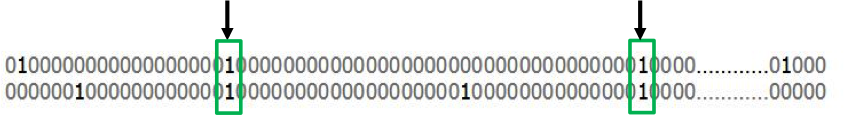
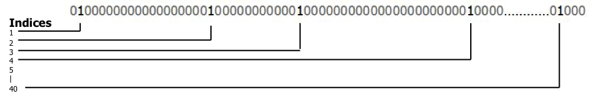
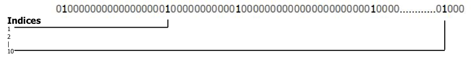
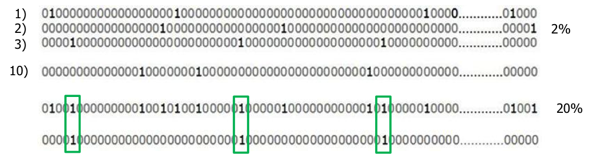

Introducing the
Numenta Platform for Intelligent Computing
(NuPIC)
Introductions
Matt TaylorOS Community Flag-Bearer
|
Scott PurdyNuPIC Engineer
|
numenta.org
http://github.com/numenta/nupic
mailing list / irc
development process
upcoming events
these slides
Grok / Numenta History
Redwood Neuroscience Institute (2002)
On Intelligence and Numenta (2005)
NuPIC (2005-2009)
CLA white paper (2009)
Grok (2012)
Open source NuPIC (2013)
Why NuPIC is Different
This is our CORE

Why open source the handle

When you can open source the ENGINE

Neuro theory
On-line learning from streaming data
Hierarchy of memory regions
Sequence memory
Sparse distributed representations
All regions are sensory and motor
Attention
**Necessary and sufficient for biological and machine intelligence.
Sparse Distributed Representations
Dense representations
- Few bits (8 to 128)
- All combinations of 1's and 0's
- Example: 8 bit ASCII, m = 01101101
- Individual bits have no inherent meaning
- Representation is assigned by programmer
Sparse Distributed Representations (SDRs)
- Many bits (thousands)
- Few 1's mostly 0's
-
Example: 2000 bits, 2% active
0100000000000000000000000000000000010000........01000 - Each bit has semantic meaning
- Meaning of each bit is learned, not assigned
Similarity
Shared bits = semantic similarity Store and Compare
store indices of active bits
subsampling is OK
Union membership
Store union of many SDRs
Is this SDR a member?
Sequence Memory
2000 choose 40 = 9.1 * 1083
Multiple predictions per cell
First-order memory
40 active columns, 10 cells per column = 1040
Variable order sequence memory
Cortical Learning Algorithm
- Encoders
- Spatial Pooler
- Temporal Pooler
- CLA Classifier
Hotgym Example
model = ModelFactory.create(model_params.MODEL_PARAMS)
model.enableInference({'predictedField': 'consumption'})
metricsManager = MetricsManager(_METRIC_SPECS, model.getFieldInfo(),
model.getInferenceType())
with open (findDataset(_DATA_PATH)) as fin:
reader = csv.reader(fin)
headers = reader.next()
for i, record in enumerate(reader, start=1):
modelInput = dict(zip(headers, record))
modelInput["consumption"] = float(modelInput["consumption"])
modelInput["timestamp"] = datetime.datetime.strptime(
modelInput["timestamp"], "%m/%d/%y %H:%M")
result = model.run(modelInput)
result.metrics = metricsManager.update(result)
'sensorParams': {
'encoders': {
'consumption': {
'type': 'AdaptiveScalarEncoder',
'n': 100,
'w': 21
},
},
},
'tpParams': {
'columnCount': 2048,
'cellsPerColumn': 32,
'permanenceInc': 0.1,
'permanenceDec' : 0.1,
},
'clParams': {
'steps': '1,5',
},
Creating the model
model = ModelFactory.create(model_params.MODEL_PARAMS)
Making predictions
for i, record in enumerate(reader, start=1):
modelInput = dict(zip(headers, record))
modelInput["consumption"] = float(modelInput["consumption"])
modelInput["timestamp"] = datetime.datetime.strptime(
modelInput["timestamp"], "%m/%d/%y %H:%M")
result = model.run(modelInput)
ModelResult(
predictionNumber=99
rawInput={'timestamp': datetime.datetime(2010, 7, 6, 3, 0), 'consumption': 4.5999999999999996}
sensorInput=SensorInput(dataRow=(4.5999999999999996, 1, 3.0, 0)
dataDict={'timestamp': datetime.datetime(2010, 7, 6, 3, 0),
'consumption': 4.5999999999999996}
dataEncodings=[array([1., 1., 1., 1., 1., ...]), ...]
sequenceReset=0.0
category=0
)
inferences={
'multiStepPredictions': {
1: {
5.2825868514199987: 0.69999516634971859,
10.699999999999999: 0.07601257054965195,
22.100000000000001: 0.055294648127235196,
22.899999999999999: 0.052690624183750749,
},
5: {
38.188079999999999: 0.2275438176777452,
47.359999999999992: 0.19538808382423584,
37.399999999999999: 0.12597931862094047,
45.399999999999999: 0.099123261272031596,
37.089999999999996: 0.082913215936932752,
39.280000000000001: 0.077935781935515161,
43.629999999999995: 0.076405289164189288
}
},
'multiStepBestPredictions': {1: 5.2825868514199987, 5: 38.188079999999999},
'prediction': [5.2825868514199987, None, None, None],
'encodings': [array([ 1., 1., 1., 1., 1., ...], dtype=float32), None, None, None]
}
metrics={...}
predictedFieldIdx=0
predictedFieldName=consumption
)
Demos?
Hackathons
June 2013
|
Fall 2013
|